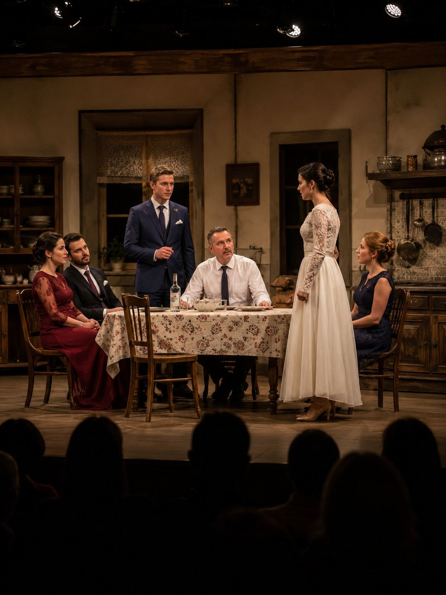
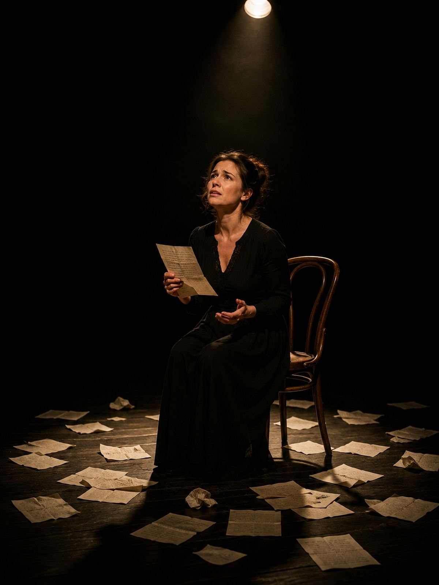
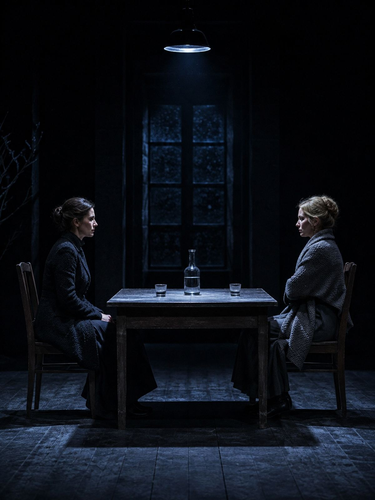
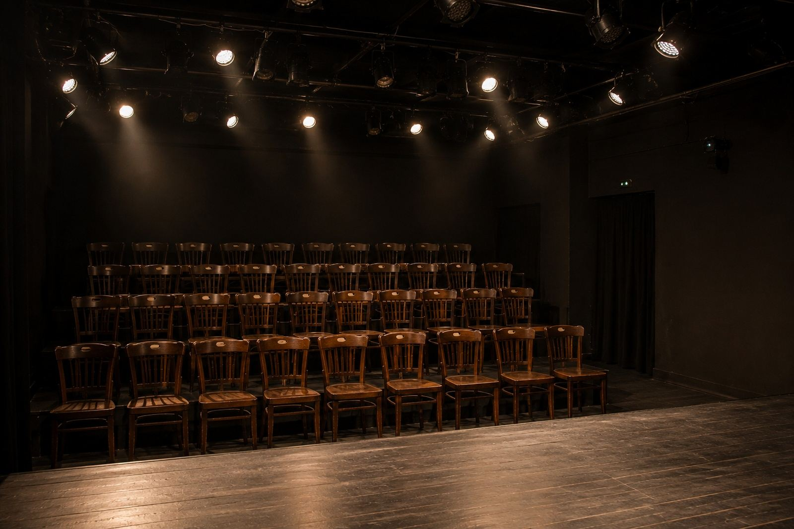

Wesele w kuchni
Cała rodzina zamknięta w jednym pomieszczeniu na sześć godzin przed weselem. Nikt nie wychodzi, wszystko wychodzi na jaw.
85 min bez przerwyod 16 lat4 aktorów
Teatr na pierwszym piętrze kamienicy przy Nawrot. Trzy spektakle w repertuarze, grane po dwa, trzy razy w miesiącu. Bez mikroportów, bez kurtyny i bez ostatniego rzędu, z którego nic nie widać.
Komedia w jednym akcie · 85 minut bez przerwy
Repertuar
Gramy w piątki i soboty wieczorem, czasem w niedzielne popołudnia. Kasa czynna godzinę przed spektaklem, ale miejsca lepiej zarezerwować telefonicznie — sala jest mała i schodzi szybko.
Repertuar na listopad ogłaszamy w połowie października. Kto chce wiedzieć wcześniej, zostawia numer w kasie — dzwonimy dzień przed otwarciem sprzedaży.
W repertuarze
Nie gramy gościnnie i nie wystawiamy klasyki w nowych kostiumach. Wszystko, co u nas idzie, powstało w tej sali i pod jej rozmiar.

Cała rodzina zamknięta w jednym pomieszczeniu na sześć godzin przed weselem. Nikt nie wychodzi, wszystko wychodzi na jaw.
85 min bez przerwyod 16 lat4 aktorów

Monodram na podstawie prawdziwej korespondencji z lat pięćdziesiątych, znalezionej na strychu kamienicy przy Kilińskiego.
70 min bez przerwyod 14 lat1 aktorka

Dwie siostry po pogrzebie matki dzielą dom, którego żadna nie chce. Rzecz o tym, że najtrudniej rozmawia się z kimś, kto pamięta to samo.
110 min z przerwąod 16 lat3 aktorów
Bilety
Nie mamy sprzedaży internetowej i na razie nie planujemy. Rezerwacja przez telefon trzyma miejsce do pół godziny przed spektaklem — potem zwalniamy je dla tych, którzy przyszli bez zapowiedzi.
Dzwonisz, podajesz datę i liczbę miejsc. Zapisujemy w zeszycie i podajemy numery rzędów — sala jest na tyle mała, że każde miejsce jest dobre.
Kasa otwiera się godzinę przed. Płacisz gotówką albo kartą, odbierasz bilet. Wpuszczamy do sali piętnaście minut przed.
Nie wpuszczamy po rozpoczęciu — przy tej odległości od sceny każde wejście przerywa spektakl. Bilet przenosimy na inny termin.

Sześć rzędów po dziesięć krzeseł. Pierwszy rząd stoi dwa metry od sceny.
O teatrze
Zaczęliśmy w 2013 roku, w sali po dawnej szkole tańca. Zespół to sześć osób — czworo aktorów, reżyserka i jedna osoba od wszystkiego innego.
Gramy dla sześćdziesięciu osób naraz i to jest decyzja, nie ograniczenie. Przy tej wielkości sali aktor słyszy, jak widownia oddycha, a widz widzi, że aktorowi drży ręka. Tego nie da się zrobić na dużej scenie.
Utrzymujemy się z biletów i z warsztatów dla szkół. Nie mamy stałej dotacji, więc każdy wyprzedany piątek naprawdę coś znaczy.
Archiwum
Spektakle zdjęte z afisza. Część wraca na jeden wieczór w rocznicę premiery — informujemy o tym w kasie.
Dojazd i kontakt
Wejście od podwórza, przez bramę obok kwiaciarni. Schody są strome i nie mamy windy — jeśli to problem, zadzwoń przed przyjściem, coś wymyślimy.